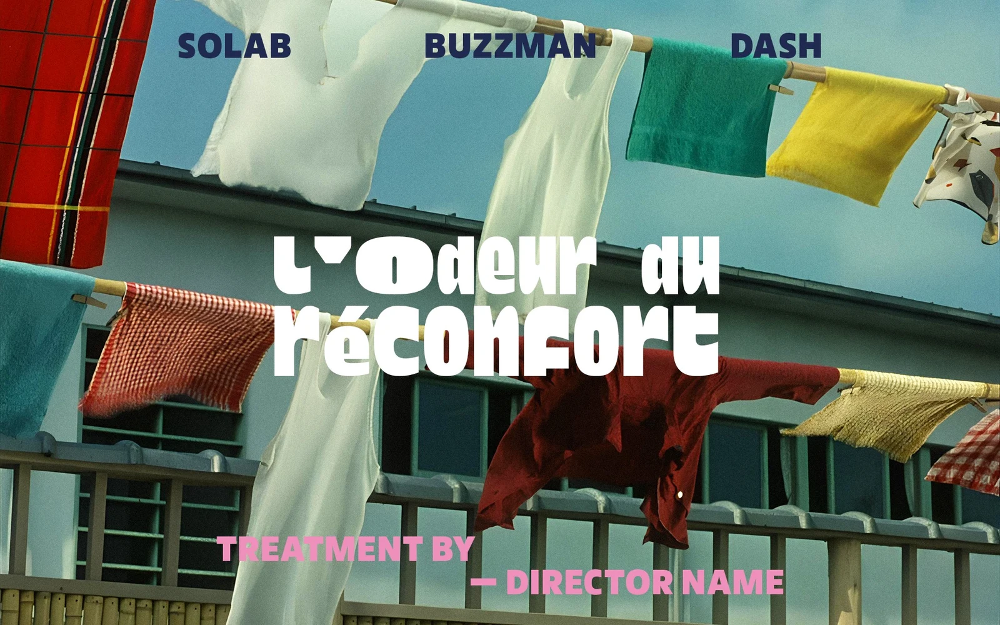
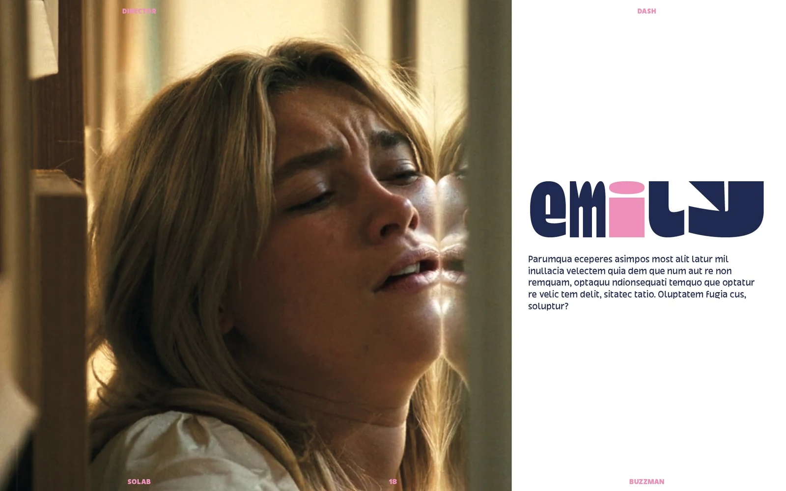

DASH
DIRECTOR'S TREATMENT
2024
VISUAL STRATEGY AND TREATMENT DESIGN. FROM CURATED ICONOGRAPHY TO FINAL LAYOUT, CRAFTING THE VISUAL LANGUAGE FOR THE UPCOMING GLOBAL CAMPAIGN.


DIRECTOR'S TREATMENT
2024
VISUAL STRATEGY AND TREATMENT DESIGN. FROM CURATED ICONOGRAPHY TO FINAL LAYOUT, CRAFTING THE VISUAL LANGUAGE FOR THE UPCOMING GLOBAL CAMPAIGN.

